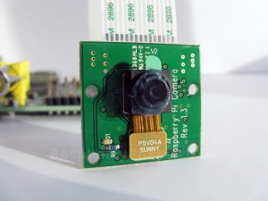
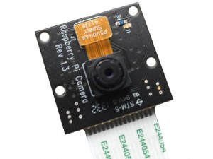
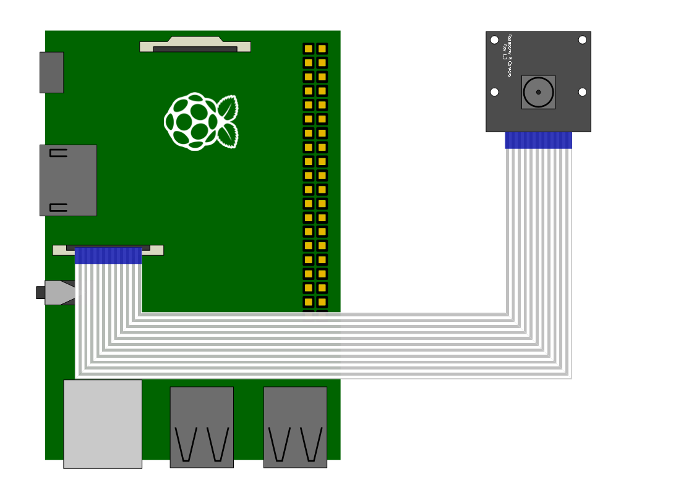
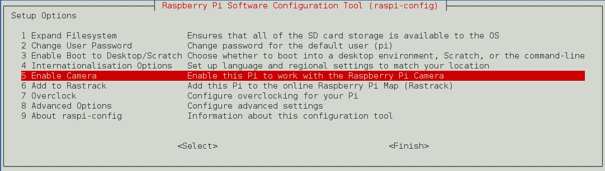
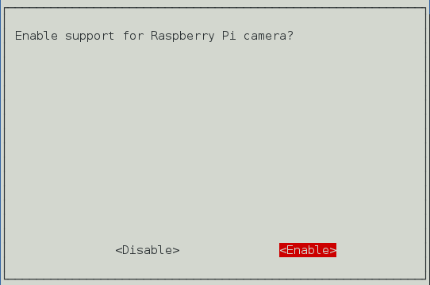

Raspberry Pi에서 제공하고 있는 카메라는 2종류가 있다. 하나는 일반적으로 사용하는 카메라로 기판 색이 초록색으로 되어 있다. 다른 하나는 NoIR(No Infrared) 카메라로 기판색이 검은색으로 되어 있다. 적외선 필터가 없는 카메라이다. 두 카메라는 기능적으로 완전 동일하나 NoIR 카메라는 적외선 필터가 없으므로 적외선 영역까지도 볼 수있다. 즉 적외선 LED와 함께 사용하면 어두운 장소에서도 촬영이 가능하다. 물론 일반 카메라도 가시광선 LED를 사용하면 되지만 이 경우 불빛이 눈에 보인다는 단점이 있다. 결론적으로 일반 카메라는 감시 카메라로 사용할 수 없다.
 카메라가 준비되었으면 그림과 같이 Camera Port에 연결한다.
Raspberry Pi에서 Camera를 사용하기 위해서는 Port를 Enable 시켜야 한다. raspi-config 화면을 열어 Camera를 Enable 시킨다.
pi@raspberrypi ~$ sudo raspi-config


설정을 마쳤으면 재부팅 한다.
pi@raspberrypi ~$ sudo reboot
기본 적인 카메라 사용방법은 다음과 같다.
사진 캡쳐는 raspitill을 사용한다.
pi@raspberrypi ~$ raspistill -o cam.jpg
상하 좌우 반전을 하고 싶으면 vf, hf 옵션을 설정한다.
pi@raspberrypi ~$ raspistill -vf -hf -o cam2.jpg
동영상 촬영은 raspivid를 사용한다.
pi@raspberrypi ~$ raspivid -o vid.h264
t 옵션을 사용하면 시간 설정이 가능하다.(기본은 5초) 다음은 10초동안 촬영한다.
pi@raspberrypi ~$ raspivid -o vid.h264 -t 10000
카메라가 작동할 때 LED가 켜지지 않게 하려면 /boot/config.txt 파일에 disable_camera_led=1을 추가한 후 재부팅 한다.
config.txt
...
...
...
# NOOBS Auto-generated Settings:
hdmi_force_hotplug=1
config_hdmi_boost=4
overscan_left=24
overscan_right=24
overscan_top=16
overscan_bottom=16
disable_overscan=0
start_x=1
gpu_mem=128
disable_camera_led=1
기타 기능들은 다음 홈페이지를 참고한다. http://www.raspberrypi.org/documentation/usage/camera/raspicam/README.md